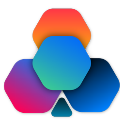
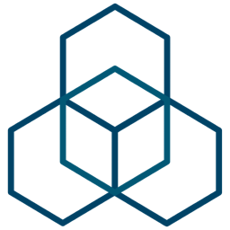
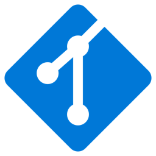
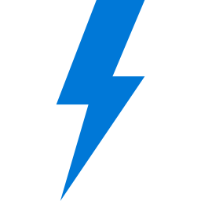

Windows appAnchor
A dock for Windows.
A floating dock for pinning the apps, files, folders and links you use most, kept where you can reach them.
More apps
The same idea as Keystore Studio, applied to a few other things: local-first, no accounts, no telemetry, free and open source.
Floating, dock-style desktop utilities, built on WinUI 3.

Windows appA dock for Windows.
A floating dock for pinning the apps, files, folders and links you use most, kept where you can reach them.
Everything you reach for, right where you are.
A quick-access orbit for apps, files, folders and links. Open it with a shortcut, a screen corner or the system tray.

A floating toolbox for developers. Format JSON, decode JWTs, hash files and mask personal data, all processed on your PC.
Focused tools that stay inside the editor, on the VS Code Marketplace and Open VSX.
Pairs well with Keystore Studio
Keystore Studio is the workbench; Certificate Utility keeps the quick checks in your editor. Inspect and validate certificates, convert them, work through keystore tasks, and scan for certificates that are about to expire, without leaving VS Code.
code --install-extension framedparadox.certi

A full Git client for VS Code that drives the real git binary, with 173 commands and a commit graph.
Encrypt and decrypt MuleSoft secure configuration properties in VS Code. The cryptography and your keys stay on your machine.

A VS Code toolkit for formatting data, managing certificates, and encoding and decoding, in one place.
Small, single-purpose packages on npm and PyPI. Run them with npx or uvx.
A remote proxy for Model Context Protocol servers, with mutual-TLS client certificate authentication.
npx mcp-secure-remote
uvx mcp-secure-remote
Extracts every pull request comment, including those from deactivated authors, into a CSV and a local review dashboard.
npx pr-comments
uvx pr-comments
Each project is developed and versioned on its own. See its repository for details, releases and support.
Windows, Microsoft Store and Visual Studio Code are trademarks of the Microsoft group of companies. These projects are independent and are not affiliated with or endorsed by Microsoft.
Keystore Studio 1.0.0 is free, open source and runs entirely on your computer.